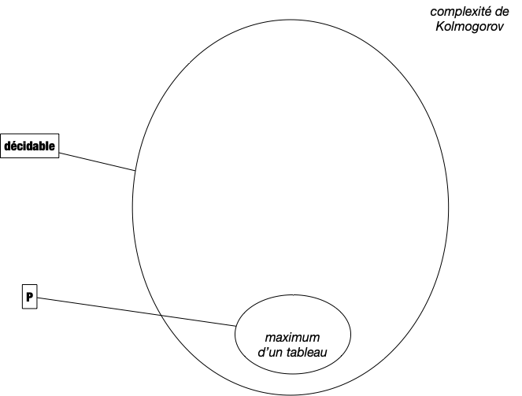
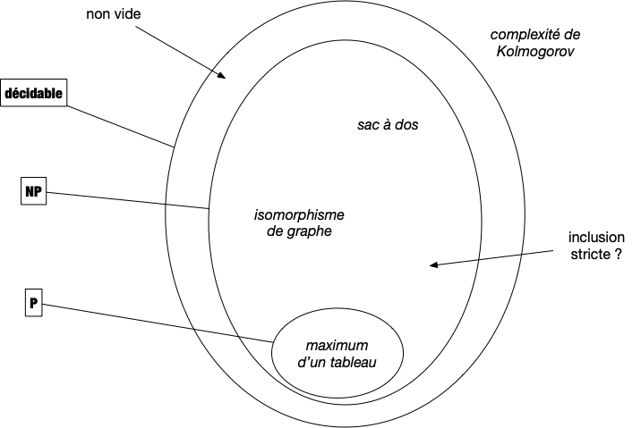

Problèmes NP
Les classes de problèmes et leurs significations donnent toujours des problèmes aux étudiants. Ils ne sont certes pas aidés par la terminologie qui, lorsqu'elle n'est pas cryptique, peut induire en erreur. Nous allons tenter d'être le plus clair possible en n'introduisant que ce qu'il est nécessaire de jargon pour comprendre l'enjeu de cette classification.
TBD : se raccrocher aux branches de la partie précédente
TBD : dire que tout est lié aux complexité.
Problèmes utilisables en pratique
Pour qu'un problème algorithmique) puisse être utilisé en pratique, il faut bien sûr qu'il soit décidable, c'est à dire qu'il existe un algorithme permettant de le résoudre. Mais parmi ces derniers, pour être utile en pratique, encore faut-il que l'on puisse les traiter en temps raisonnable (la durée d'une vie humaine par exemple). On va donner deux définitions du terme traiter. Commençons par la plus évidente : la résolution.

Problèmes P
Définition
Un problème algorithmique est dit polynomial s'il existe un algorithme de complexité polynomiale en la taille de son entrée permettant de le résoudre.
L'ensemble des problèmes polynomiaux est nommé $P$.
On a vu un certains nombre de problèmes polynomiaux, on peut par exemple citer :
- Trouver le maximum d'un tableau d'entiers dont on a démontré que sa complexité était linéaire,
- Trier un tableau d'entiers dont on a démontré que sa complexité était $\mathcal{O}(n\ln(n))$ où $n$ est la taille du tableau,

Le cas du problème de l'exponentiation est intéressant car on a démontré qu'il était en $\mathcal{O}(\ln(n))$ où $n$ est la valeur de l'exposant. Il n'est donc pas évident au premier coup d'œil que cela est bien polynomial en la taille des entrées, c'est à dire 2 entiers.
En informatique théorique l'unité d'information est le bit, la taille de l'entrée d'un algorithme est toujours égale au nombre de bits nécessaires pour la stocker. Pour un entier il s'agit donc du logarithme en base 2 de sa valeur et donc le problème de l'exponentiation est bien polynomiale, il est même linéaire en la taille de l'entrée...
Si pour être rigoureux et formel il est nécessaire de considérer qu'une case mémoire ne peut contenir qu'un seul bit plutôt qu'un entier quelconque, cela alourdit les calculs de complexité sans réel apport.
En effet l'entier étant la donnée élémentaire, toute opération qui en manipule (c'est à dire presque toutes les opérations) devra lire chaque bits les constituant, ce qui ne fait qu'ajouter un facteur linéaire en la taille des données.
Enfin, les entiers sont usuellement bornés, sur 64bits pour un processeur courant, ce qui permet d'avoir assez d'entiers pour ne pas être limité en pratique et de bien avoir une taille en $\mathcal{O}(1)$ (64 étant une constante).
Problèmes et vérificateurs efficaces
Il existe de nombreux problèmes dont on ne connait pas la complexité, ou dont on ne connait pas d'algorithme polynomiaux pour les résoudre. Citons en 3 pour se fixer les idées :
Si l'on ne connait pas d'algorithme polynomiaux pour résoudre les 3 problèmes ci-dessus, on peut en revanche vérifier efficacement (ie. polynomialement) si une solution en est une ou pas.
Prenons par exemple une instance $E$ du problème de somme de sous-ensemble et quelqu'un affirme que $E'$ en est une solution. Il est aisé de vérifier la véracité de cette affirmation avec l'algorithme ci-dessous, qui prend deux paramètres, $E$ et $E'$ :
- On vérifie que $|E'| \leq |E|$ ce qui peut se faire en $\mathcal{O}(|E|)$ opérations en comptant chaque élément de $E'$ et en s'arrêtant soit après avoir compté tous les éléments soit lorsque le compte dépasse strictement $|E|$.
- On vérifie que $E'$ est bien un sous-ensemble de $E$, ce qui peut se faire en $\mathcal{O}(|E'| \cdot |E|) = \mathcal{O}(|E|^2)$ opérations (on vérifie que chaque élément de $E'$ est dans $E$).
- On somme les éléments de $E'$ et on vérifie que la somme finale vaut $0$, $\mathcal{O}(|E'|) = \mathcal{O}(|E|)$ opérations
La complexité de l'algorithme est donc de $\mathcal{O}(|E|^2)$ et ne dépend pas du paramètre $E'$.
Cette notion de vérification est cruciale. Si on ne sait pas construire de solutions nous même mais que quelqu'un arrive avec une solution potentielle, il faut pouvoir vérifier qu'elle est correcte avant de l'utiliser. Sans cette condition le problème n'a pas de solution réaliste : toute valeur peut être solution on ne peut pas savoir avant d'essayer. On peut voir le vérificateur comme une preuve (il y a équivalence entre preuve mathématique et algorithme, rappelons-le) automatisée et efficace (polynomiale, donc pouvant être écrite puis lue par des humains) de l'exactitude d'une solution.
Formalisons cette notion de vérification efficace :
Définition
Un vérificateur efficace d'un problème décidable $P$ ayant pour entrée $e \in E$ et pour sortie $s \in S$ est un algorithme $V: E \times S \rightarrow \{0, 1\}$ tel que :
- $V(e, s)$ vaut 1 si et seulement si $s$ est une sortie de $P(e)$
- la complexité de $V$ est polynomiale en la taille de $e$ et ne dépend pas de la taille de $s$.
Remarquons que notre algorithme pour vérifier si une solution potentielle du problème somme de sous-ensemble en est bien une est un vérificateur efficace. Terminons cette partie par deux remarques d'importance.
Premièrement, il est clair que tous les problèmes de $P$ possèdent un vérificateur efficace. Il suffit en effet de commencer par résoudre le problème puis de vérifier que la solution proposée est la même que celle calculée. Ceci peut se faire en temps polynomiale de l'entrée puisque sa résolution l'est.
Deuxièmement, tout problème admettant un vérificateur efficace est décidable. Il suffit en effet de tester toutes les possibilités de sorties possibles (il y en a un nombre fini, polynomial par rapport à la taille de l'entrée puisque le vérificateur est efficace et que l'on peut énumérer en considérant leurs représentations binaires) avec le vérificateur et de s'arrêter s'il répond OUI. Au pire il faut tester toutes les solutions possibles ce qui va coûter de l'ordre de $\mathcal{O}(|e|^k\cdot 2^{|e|^k})$ opérations (avec $k$ une constante), ce qui est certes beaucoup mais reste fini.
En effet, si le vérificateur est un algorithme de complexité $\mathcal{O}(|e|^k)$, la taille de la solution est bornée par $\mathcal{O}(|e|^k)$ et donc sa valeur par $\mathcal{O}(2^{|e|^k})$. Tester toutes les possibilité avec le vérificateur prend alors de l'ordre de $\mathcal{O}(|e|^k\cdot 2^{|e|^k})$ opérations.
Problèmes NP
La notion de vérificateur efficace nécessite que l'on ait une solution à vérifier, ce qui n'est pas le cas des problèmes de décision où l'on cherche juste à savoir si c'est possible (oui ou non, existe-t-il une solution ?) plutôt que de donner une solution explicite si elle existe.
TBD : recoller les morceaux
Si ce problème admet un décideur efficace, il suffit de l'appliquer pour $K$ valant itérativement toutes les valeurs de $T$ pour trouver le maximum. Ce nouvel algorithme est également efficace et résout le problème du maximum.
De façon formelle si $P$ est un problème d'entrée $e \in E$ et cherchant une solution $s \in S$, on peut lui associer le problème de décision demandant l'entrée $(e, s)$ et répondant OUI si $s$ est une solution de $P(e)$. Si le problème de décision est décidable, alors $P$ l'est aussi puisqu'il suffit d'itérer sur tous les $s$ possibles jusqu'à trouver une solution (on suppose que toute instance de $P$ admet une solution).
La remarque ci-dessus nous montre que l'on peut uniquement considérer les problèmes de décision décidables, sans perte de généralité. Dans ce cadre, on peut définir les problèmes de décision utilisable en pratique comme étant ceux tels que :
Définition
Un problème de décision est dit $NP$ s'il existe un vérificateur efficace $v$ tel que pour toute entrée $e$ du problème il existe $t$, appelé certificat de $e$ tel que $v(e, t)$ soit vrai.
La définition ci-dessus appelle plusieurs remarques. Tout d'abord le nom a été très mal choisi. Il signifie Non déterministe Polynomial (et pas du tout non polynomial...) car cette classe de problème a initialement été déterminée par rapport aux machines de Turing non déterministe.
Deuxièmement ce qu'est le certificat n'est pas explicite. On sait juste qu'il existe. Voyez ça comme si le vérificateur était le schéma général de la preuve que $e$ est vrai pour le problème, et que le certificat était les paramètres qui permettent d'appliquer la preuve à $e$. Dans le cas de problèmes de $P$ seul $e$ suffit et pour des problèmes qui ne sont pas de décision c'est le couple $(e, s)$ (où $s$ est la solution) qui doit être prouvé.
Enfin, comme la taille du certificat est bornée par la complexité du vérificateur on peut utiliser le même argument que précédemment pour que tout problème de $NP$ est décidable : il suffit de tester le vérificateur avec tous les certificats possibles et de s'arrêter s'il répond OUI. Si l'on teste tous les certificat et qu'aucun ne donne réponse positive, la réponse du problème initial est NON. Ceci va coûter de l'ordre de $\mathcal{O}(|e|^k\cdot 2^{|e|^k})$ opérations (avec $\mathcal{O}(|e|^k)$ la complexité du vérificateur).
À retenir
Un problème est dans $NP$ s'il existe un vérificateur efficace de ses solutions. Ce sont exactement les problèmes algorithmiques utilisable en pratique car :
- On peut énumérer toutes les solutions possibles en temps fini, mais possiblement exponentiel (ce qui fonctionne lorsque la taille d'entrée est faible).
- On peut vérifier efficacement (en temps polynomial) si une proposition de solution est réellement une solution.
Au final on a le schéma suivant :

Autres classes
co-NP
Inclusion des classes
TBD : entre décidable et NP il y a du monde et entre NP et P on ne sais pas.
Finissons cette partie par une question encore sans réponse actuellement. Est-ce qu'il existe des problèmes de décision de $NP$ qui ne sont pas dans $P$ ?
La question semble idiote dit comme ça, mais c'est une vraie question et personne n'a de réponse. Certains se demandent même si cette question est décidable (ie. démontrable). Ce qui est en revanche sur c'est que tout le monde espère que c'est vrai car sinon tout code informatique devient facilement déchiffrable et s'en est fini de la sécurité sur les réseaux (pour ne donner qu'une des conséquence de l'égalité de $P$ et de $NP$).

TBD mettre SAT comme exemple de problème de décision
TBD co-NP et les conjectures np intersection co=np
TBD dire qu'on peut aller plus loin et que c'est un champ de recherche. log, poly log. etc